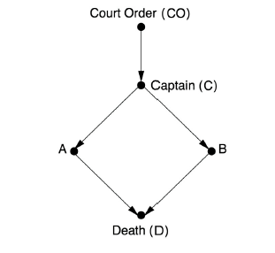

概要
本文对应于《causality》中的第一章，本章在正式进入因果世界之前，介绍了一些必要的基础知识，包括理解本书所需要的所有概率论背景和图形符号，以及在Pearl提出结构因果模型（SCM,structual casual model)前图模型和因果模型的发展。本章对因果推理领域的基本范式和基本问题进行了定义，而这些问题会在之后的章节中一一被解答。
概率论知识简介
只要理工科专业本科毕业、学习过概率论的人，应该对本书所需要的大部分概率基础都有所了解，因此这里将只会列出一些基本公式，而不去赘述原理细节。而在此之前，还有一个更重要的问题需要讨论，那就是为什么在因果的世界里需要概率的参与？
在一个直觉的认知里，因果是一种确定性、必然性的存在（在微观的量子世界里，这是个错误的结论，但在这里，我们可以假设在宏观世界里这个结论成立，至少是近似成立），而概率代表着不确定、不规律和存在例外。一个简单的原因是我们对这个世界、对因果的认知都要来自我们主观的观测，而我们的观测会存在误差、不确定性，还有一些我们观测不到的隐变量会给我们的判断带来例外，比如，我们知道：
1.太阳即将升起前，公鸡就会打鸣。
2.如果某只公鸡生病了，那么即使太阳即将升起，那么它也不会打鸣。
1可以代表某种我们已知的确定的因果关系，而2代表一种我们可能观测不到的例外情况（也是一种因果关系），所以我们即使知道太阳即将升起，也不能保证某只公鸡一定会打鸣。
而在实际的场景中，我们一般不会仅关心因果关系的存在与否，更会关心因果关系的强弱（在多个原因都可能影响一个结果的时候，哪个是最主要的），以及如何从带有噪音的观测中还原出因果关系。因此借助概率论可以表示非显式的意外发生的优良特性，我们可以更好地去抓住因果问题的本质。
当然借助概率只能解决因果中的一部分问题（隐变量的问题），而剩下的问题，包括inference, interventions, identification, ramification, confounding, counterfactuals, and
explanation 将成为书中之后讨论的核心。
下面是将会用到的重要的概率公式：
$$
\begin{aligned}
&P(A,B)=P(A)P(A|B), P(A|B)=\frac{P(A,B)}{P(B)} \\
&P(A)=\sum_{i}P(A|B_i)P(B_i) \\
&chain\ rule: P(E_1,E_2,…,E_n)=P(E_n|E_1,…,E_{n-1})…P(E_2|E_1)P(E_1)\\
&inversion\ formula:P(H|e)=\frac{P(e|H)P(H)}{P(e)}\\
&\frac{P(H|e)}{P(\neg H|e)}=\frac{P(e|H)}{P(e|\neg H)}\frac{P(H)}{P(\neg H)}\\
&prior\ odds:O(H)=\frac{P(H)}{P(\neg H)}=\frac{P(H)}{1-P(H)}\\
&likelihood\ ratio:L(e|H)=\frac{P(e|H)}{P(e|\neg H)}\\
&posterior\ odds:O(H|e)=\frac{P(H|e)}{P(\neg H|e)}=L(e|H)O(H)\\
&covariance: \sigma_{XY} \triangleq E[(X-E(X))(Y-E(Y))]\\
&correlation\ coefficient: \rho_{XY}=\frac{\sigma_{XY}}{\sigma_{X}\sigma_{Y}}\\
®ression\ coefficient (of\ X\ on\ Y):r_{XY}\triangleq \rho_{XY}\frac{\sigma_X}{\sigma_Y}=\frac{\sigma_{XY}}{\sigma^2_{Y}}
\end{aligned}
$$
概率图模型
本节将简述帮助Pearl获得图灵奖的核心工作——贝叶斯网络，虽然仅仅依靠传统的贝叶斯网络不足以研究因果关系，但它仍是因果图模型（causal diagrams)的基础。在这里，我们主要研究有向无环图（directed acyclic graph, DAG),有向、无环分别对应我们对因果关系（或者是时序关系）的两个假设，不对称性和不能互为因果（在事件性因果关系中，因的一个前提条件是发生在果前，意味着不可能互为因果）。
Markovian parents
在介绍贝叶斯网络前，首先了解一下Markovian parents 的概念，对n个变量，$X_1,X_2,…,X_n$(可任意排序)，由chain rule, 我们可以表达联合分布：
$$P(X_1,X_2,…,X_n)=\prod_i P(X_j|X_1,…,X_{j-1}) $$
这样，给定任意一种排序，我们只需要考虑$X_i$关于${X_1,…X_{i-1}}$的条件概率。但$X_i$不一定依赖于它的所有前置变量，这时如果我们能找到一个${X_1,…X_{i-1}}$的子集$PA_i$,可以满足
$$P(X_i|PA_i)=P(X_i|X_1,…,X_{i-1}) $$
且任意$PA_i$的子集不能满足于上式，换句话说，$PA_i$是满足上式的一个${X_1,…X_{i-1}}$的极小子集。这样的$PA_i$就称为$X_i$的一个Markovian parents.
Pearl在1988年证明了，如果概率分布P(v)是严格正定的（每个可能的联合概率分布都严格大于0），那么对每个变量就存在唯一满足要求的$PA_i$。
利用这种父节点集，我们就可以更好地表达我们的先验知识，从而大大减少计算联合分布时所需要的模型体积。
贝叶斯网络
我们可以将上述的$PA_i$嵌入一个DAG中来更清晰的表达，贝叶斯网络就由此诞生。在贝叶斯网络中，我们用图的结点来表示一个变量，如果一个变量存在于另一个的$PA_i$中（两者直接依赖），那么就添加一条由前一个结点指向后一个结点的边。
下图就是一个贝叶斯网络的简例。
如前文所述，我们可以把上图的联合概率分解为$P(x_1, x_, x_3, x_4, x_5) = P(x_1)P(x_2|x_1)P(x_3|x_1)P(x_4| x_2, x_3)P(x_5|x_4)$。
如果一个概率分布P满足一个DAG G中的所有分解，那么我们就可以用G来表示P,称P和G兼容，或者说两者Markov 相关。
一个验证兼容性的简单方法是列出G要求的所有条件独立性验证它们在P中都有所满足。这些条件独立性可以通过一种称之为有向分离(d-separation)的方法从DAG中得到。
d-separation
考虑三个不相交的变量集合X、Y、Z, 它们在DAG中用对应的结点集合表示，如果我们想要知道在给定Z的情况下，X和Y是否独立，那我们就熬检测在DAG中Z能否“封锁”住从X到Y的路径。
在后文中，我们将用$(X\perp Y|Z)$代表X和Y关于Z独立，即
$$(X\perp Y|Z), iff P(x|y,z)=p(x|z)$$
考虑只有三个结点和两条边的最简单结构，那么有如下三种情况：
1.$X\rightarrow Y \rightarrow Z$,称之为“chain”,或”mediation”,可以将Y看作中介，将X的作用传递到Z，此时有$(X\not\perp Z),(X\perp Z|Y)$.
2.$X\leftarrow Y \rightarrow Z$,称之为“fork”,Y是X和Z的共同父节点，此时同样有 $(X\not\perp Z),(X\perp Z|Y)$.
3.$X\rightarrow Y \leftarrow Z$,称之为”collider”,X和Z是决定Y的两个不同原因，此时有$(X\perp Z),(X\not\perp Z|Y)$,注意到给定Y时，X和Z的独立性反而被打破，这并不难理解，比如我们扔出两个独立的骰子，在已知两个骰子点数之和时，它们各自的点数不再独立，给出任意一个，我们就可以知道另一个。
$$ P(x|y,z)=\frac{P(x,y,z)}{P(y,z)}=\frac{P(y|x,z)}{P(y|z)}P(x)\not = P(x) = P(x|z)$$
对图结构上的每一条路径，其上的每个变量都可以归为上述三类情况中的一类的中间结点，由此我们就可以判断出一个变量集合Z能否d-separated一条路径。
定义：d-Separation
一条路径P被一个变量集Z d-sepatate(或者说，封锁)，当且仅当：
1.p中有一个chain或fork结构，且它的中间结点m在Z之中。
或者，2.p中有一个collider结构，且他的碰撞结点c及c的后代不在z之中。
如果Z封锁了X到Y的每一条路径，那么就称Z d-separate 了X和Y.
如果我们可以判断出在一个DAG G中，变量集X和Y被Z d-separate,那么在每一个与G兼容的概率分布P中，X和Y都关于Z条件独立。
观测等价
d-separation 还有一个重要作用是判断两个DAG是否观测等价（Observational Equivalence),观测等价的含义是，每个与其中一个DAG兼容的概率分布P,都与另一个也兼容。
定理：观测等价
两个DAG是观测等价的，当且仅当他们的有相同的骨架（skeleton，去掉箭头后的无向图），同时还有相同的v型结构（两个汇聚的箭头，且它们的尾结点没有相连）集合。
观测等价的存在是贝叶斯网络不能解决因果问题的一个体现，它意味着我们仅仅依靠概率知识进行推断的能力是有限的，$A\leftarrow B$ 与$A\rightarrow B$代表的因果关系完全相反，但与他们兼容的概率分布和条件独立性却可以相同。
学习和推断
贝叶斯网络有一系列有点，但遗憾的是，从数据中训练和学习贝叶斯网路，以及用贝叶斯网络来进行推断预测，都是np难的问题，因此我们一般使用一些近似性算法，比如在推断中通常使用吉布斯采样。由于跟后文关系不大，这里不具体介绍这些算法。
因果贝叶斯网络
在贝叶斯网络中，我们用有向无环图中的箭头来表达关联性而不是因果性，我们可以基于因果信息而不是关联性来建立一个DAG，这样有如下的好处：
1.利用因果关系构建的模型被认为是更可靠的、更容易理解的和可信赖的，
2.这样的模型的建立是基于我们对因果构造的理解之上的，因此我们有能力更好的表达和回应外部或者内部的变化。
表达“介入”的神器（oracles)
要理解第二条优点，首先要明白观察(observation）和介入（intervention）的区别。
对传统的统计学（贝叶斯学派）和贝叶斯网络而言，想要解决的问题是计算出P(H|e)的值，H是我们关注的变量，而e是我们观测到的证据，由此我们还可以计算出最大后验概率MAP(对应频率学派的最大似然概率，MLE)，目标是找到给定观测证据e下H最有可能的取值h。
但除了观测之外，我们还有另一种情况，称之为介入。考虑如下图的情况，
我们用CO代表法庭的指令，用C代表士兵长的命令，用A、B代表两个不同的士兵是否执行枪击，用D代表死刑犯的死活。

如果士兵A出于某些原因，在没收到命令的情况下就执行了枪击，如果在传统的表示关联性的DAG中，我们可能需要重构整个模型增加新的变量来表达新的情况，而当DAG的有向边表示因果时，我们只需要切断所有指向A的箭头，并将A的值设为true 即可，如下图。因此，Pearl不吝将这种传递因果的有向无环图赞誉为神器（oracles),一种能有效表示介入行为的神器。
这代表着原有的可以影响A的因果机制在这里不再发挥作用，而某种外部介入的机制将A设定为了某个定值。我们很容易地就可以发现观测和介入的区别，观测时被动的接受目标的状态，不会改变系统内部的机制，而介入会。如果我们观测到A执行了枪击，那我们就知道法庭和士兵长给出了命令，但如果是A主动给出了枪击，我们就无从判断。Pearl为了引入介入的概念，定义了一个新的符号do(A=true),在此后我们会经常地使用这个符号。
因果关系及其稳定姓
有了介入的概念，我们就有了一种语义基础去更好地去定义什么是因果影响。比如，为了检验X对Y是否有因果影响，我们可以计算在不同介入do(X=x)下Y的边缘分布，即P(Y|do(X=X))，来检测Y的分布对X的变化是否敏感。而P(Y|X)无法做到，这是由于某些可能的混杂因子（coufounder)的存在，仅仅知道自然观测到的X却不知道背后的机制并不能给我们带来有效的信息。因为如此，在许多传统统计学研究中，往往使用随机对照实验（RCT）的方法，借助随机性来消除随机的影响。
从上述分析和我们生活中的经验来看，比起概率关系，我们似乎往往会更加相信因果关系。如果你也是贝叶斯学派的信徒，那么这种现象就并不难理解，贝叶斯学派认为概率是我们认识世界的方式，代表我们的信念而不是世界本身的规律，而概率的不确定性往往来自我们先验知识的不足，从哲学角度看，概率是认知论的，而因果关系在这里恰恰就是代表着世界的客观规律，是存在论的。
从数据的角度来看，概率是我们分析和使用数据认识世界的一种手段，而因果关系在背后决定着数据如何生成，我们收集数据（先验知识）的多少可能决定着我们的估计产生变化，但背后的客观规律和因果机制是不会随我们的认知而改变的。
函数因果模型
而早在统计学家和计算机科学家将目光投向因果领域之前，在遗传学、经济学和社会科学等领域，已经有一套广泛流行的因果模型。这种模型将因果关系用一种确定性的、函数式的方程表达，而当假设方程中有未观测到的变量时才会引入概率。这与因果贝叶斯网络中的定义恰好相反，它假设所有的因果关系在本质上是随机的。
根据物理学最前沿的发现（比如量子物理），自然界的法则其实有内在的随机性，而确定性只是我们为了方便而做的近似。但在我们后续的讨论中，会更喜欢使用将要介绍的确定性的因果模型，有以下两个原因：
1.确定性的关系更加普遍，容易推广，而且我们可以用确定性的函数关系去模拟或者近似随机的过程。
2.确定性的概念更加接近人类的直觉，事实上量子物理中的不确定性就因为与我们的直觉相违背而被许多像爱因斯坦这种著名的物理学家怀疑和反对。如果我们想赋予人工智能因果推理的能力，模拟我们的大脑的直觉是一个看起来更容易实现的选择，因为现阶段我们知道处理能解决因果问题的只有我们的大脑。
一个函数因果模型包含的方程都有如下的形式：
$$ x_i=f(pa_i+u_i),i=1,2,…,n$$
其中$pa_i$代表直接决定了$x_i$的值的变量集，而$u_i$代表了存在未知因素所带来的偏差。
如果我们有一系列这种方程，每个方程代表了一个自发的机制，那么就将构成的模型称之为一个结构模型；而如果在这些方程中，每个变量出现在等号左侧出现过一次，那么就称之为结构因果模型。如果把方程更改为线性化、参数化的形式，
$$x_i=\sum_{k\not = i}\alpha_ix_i+u_i$$
就变成了一个线性结构方程模型(structural
equation models,SEMs),这是目前在经济学和社会科学中都被广泛使用的一种标准工具。
因果的三个阶梯
我们发现，在我们提出因果相关的问题的时候，我们可以把这些问题细分为三个不同的类别。他们代表着因果问题的三个不同的层次，我们以之前的死刑犯问题为例介绍这三个层次：
1.prediction, 预测问题基于我们被动的观测来提问，一般形式是“what if I see …?” eg.如果我们观察到士兵A执行了枪击，那么死刑犯会不死亡？
2.intervention,介入问题比预测问题在更高的层次上，因为它允许我们不仅是被动地观测还可以主动地做出改变，一般形式事”what if I do …?”
eg.如果士兵A主动执行了枪击，那死刑犯会不会死亡？
3.counterfactuals,反事实问题允许我们询问与事实相反的问题，允许我们回到过去改变我们的决定或者设想一个不可能的世界，一般形式是”what if I have done …? why?”
这三种问题可以看作不断递进的三个阶梯，我们需要更多的知识细节才能解决更高层次的问题。
因果模型中的概率预测
给定一个因果模型，将模型中的每个变量都对应到一个图中的结点，从变量集合$pa_i$中的每个变量出发都画一条指向$x_i$的箭头，就可以给出一个对应的因果图。如果图中没有环路，那我们就称模型的半马尔科夫的，此时P($x_1,x_2,…,x_n$)的概率分布仅由误差变量集U决定。如果误差项之间是互相独立的，那我们称模型是马尔科夫的。
在马尔科夫的因果模型中，child-parent的关系代表着一个确定性的函数关系，而不再是条件概率$P(x_i|pa_i)$,但因为其马尔科夫性质的存在，每个关系对最终的概率分布有着独立的等价约束，最终会产生与贝叶斯网络相同的概率分解。
这意味着，不用考虑函数关系{$f_i$}的具体表达形式或者误差项$P(u_i)$的分布，一旦我们知道了所有$p(x_i|pa_i)$,那因果马尔科夫模型中的所有概率性质就都被决定了，而不用关心生成这些条件概率的背后机制是什么。
因此，我们用传统的机器学习方法就可以很好的解决掉这些预测层面的问题，但使用causal-functional的表述规范仍然有这么几个优点：
1.因果图G中蕴含的条件独立性是稳固的，即使函数$f_i$中的参数和概率分布$P(u_i)$发生改变，这些独立性也不会变。
2.函数的表述往往是更有意义的和自然的，它只会产生一个很小数量的参数。
3.在因果模型中对条件独立性假设的判断会更加简单和可靠，这些假设可以通过判断是否有未观测到的共同原因而直接判断，而在贝叶斯网络中，$pa_i$并不一定包含所有直接原因，因此判断起来也更加复杂。
4.最后，当我们的环境发生了改变时，往往只有几个因果机制会发生改变，而其余部分不变，因此，在因果模型中，我们只需要进行局部调整，可能只需要改变几个参数，而不需要像概率模型一样重建整个模型。
5.(个人观点补充)在现在流行的机器学习的概率模型中，我们最后学习到的模型的形式完全取决于我们得到的数据，如果数据发生了改变，我们的模型也就要因此改变。这样可能导致，两次分别收集到的数据会产生两个不同的模型。而因果模型解决了这个问题，我们事先假定了数据生成得机制，而数据之间的偏差只会因为$u_i$的未知性而出现，我们没有必要为了数据变化重构模型，如果我们的假设正确，我们就可以用一个模型处理所有可能出现的数据情况。
因果模型中的介入问题
函数的刻画$x_i=f_i(pa_i,u_i)$提供了一种方便的语言去描述在外部的介入下，概率分布将会如何去改变。我们可以将介入编码为对一系列函数的修改而不是直接修改条件概率。我们修改介入对应的方程产生一个新的模型，然后计算新模型对应的概率分布，就可以计算出介入的效用。
比如在死刑犯问题中，我们想要表示“士兵A主动执行枪击”，就要删除掉$A=f_A(C,u_A)$,并替换为A = true.
这种对介入问题函数化的表达，比起随机模型更具灵活性和普遍性。一个模型中会有许多不同的条件概率与我们实行的介入有关，但只有有限几个相关的函数方程。
因果模型中的反事实问题
反事实是函数因果模型中最与众不同的问题，这些问题不能在随机（因果）网络中被定义。
我们用X和Y分别代表患者是否接受过某种治疗（X=1,接受;X=0X不接受）和有没有恢复（Y=1,恢复；Y=0,死亡）两种事件。现在假设某人接受了治疗并且死亡，我们想要知道是不是因为接受治疗他才会死亡，还是不管有没有治疗，他都会死亡，换句话说，我们想知道如果它没有接受治疗的情况下死亡的概率Q。这就是一个最简单的反事实问题。
这些问题被很多统计学家发现难以解决而被归为形而上学的问题，但在我们科学、法律甚至日常的语言中（比如英语中，存在一种虚拟语气），都经常会出现这种反事实的表述，这意味它应该远非形而上的，而应该是能被我们明确测试的。本书之后的一个核心内容就是：解决反事实问题需要什么样的经验知识？如何用数学严格的表达反事实问题和所需要的经验知识？
我们先来说明为什么贝叶斯网络，即使嵌入了因果解释，也不能用来解决反事实问题。我们仍然上文中表述的问题，假设给出概率分布：
$$p(y,x)=0.25, for\ all\ x\ and\ y$$
我们可以给出两个不同的模型，都可以生成如上的概率分布，但会有不同的反事实概率Q.
$$Model\ 1: x_1=u_1, x_2 = u_2$$
$$odel\ 2: x_1=u_1, x_2 = xu_2+(1-x)(1-u_2)$$
两个模型对应的图结构和表格如下：
在模型1中，Q=0，而在2中，Q=1。出现了这种现象的主要原因是，模型2描述的是两种subpopulation的混合。
这个例子告诉了我们随机的概率模型不适合进行反事实概率的计算，同时也告诉了我们函数式的因果模型可以满足这种概率的计算。我们可以把任意因果模型计算的步骤概括为三步：
Step1(abduction): 更新概率P(u)为P(u|e)。
Step2(action): 把集合X对应的方程替换为X=x。
Step3(prediction): 使用修改后的模型去计算概率Y=y。
这个被分为三步的反事实推理模型揭示了概率模型不能做反事实推理的根本原因，因为在随机模型中U变量并没有被显式的表示。
小结
经过对预测、介入、反事实三种问题的依次分析，我们可以看出它们形成了一个明确的层次结构，解决这些问题的知识需求不断增加。预测问题只需要得到概率分布函数即可解决，介入问题除概率分布外，还要知道因果结构，而反事实是最难解决的问题，因为它需要知道具体的函数关系的表达以及被忽略的因素的分布。
(完)